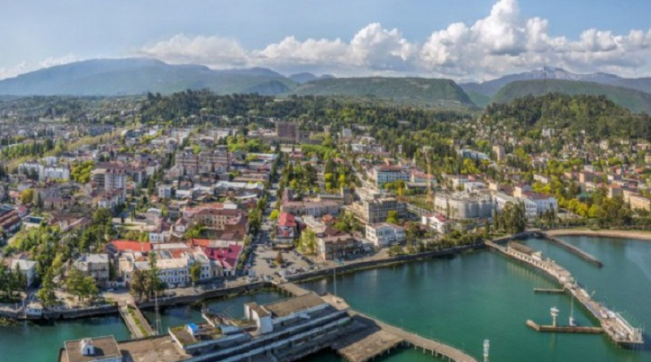
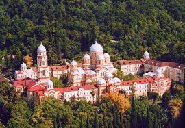

სოხუმი Sokhumi
ახალი ათონი Akhali Atoni
გაგრა Gagra

აფხაზეთი Abkhazia
აფხაზეთის შესახებ აფხაზეთი არის საქართველოს უკიდურესი ჩრდილო-დასავლეთის ისტორიული პროვინცია. ამჟამად მისი ჩრდილოეთ საზღვარი კავკასიონის მთავარი წყალგამყოფი ქედის თხემს გასდევს, სამხრეთით და სამხრეთ-დასავავლეთით შავი ზღვა აკრავს, ჩრდილო-დასავლეთის საზღვარი მდინარე ფსოუზე გადის, ხოლო აღმოსავლეთი სვანეთ - აფხაზეთის ქედზე და მდინარე ენგურზე. აფხაზეთის ავტონომიური რესპუბლიკის ფართობი დღეს 8,7 ათასი კვ.კმ-ია, რაც საქართველოს ტერიტორიის 12,5 პროცენტს შეადგენს.
About Abkhazia Abkhazia is a historical province in the extreme north-west of Georgia. Currently, its northern border follows the crest of the main watershed ridge of the Caucasus, it is bordered by the Black Sea to the south and southwest, the north-western border runs along the Psou River, and the eastern border with Svaneti - the Abkhazian ridge and the Enguri River. The area of the Autonomous Republic of Abkhazia today is 8.7 thousand sq. km, which is 12.5 percent of the territory of Georgia.
აფხაზები კავკასიის ერთ-ერთი უძველესი მკვიდრი ეთნიკური ჯგუფია, რომელიც პირველად ძვ.წ. XII საუკუნის ასურულ წარწერებშია მოხსენიებული. ძვ.წ. IX-VI საუკუნეებში რეგიონი კოლხეთის უძველესი სამეფოს ნაწილი იყო, სადაც ბერძენი კოლონისტები შავი ზღვის სანაპიროზე სავაჭრო ცენტრებს, როგორიცაა დიოსკურია, აარსებდნენ. VI საუკუნიდან აფხაზეთი ბიზანტიის მმართველობის ქვეშ მოექცა, ადგილობრივი ტომები კი 548 წელს ქრისტიანობის გავრცელების შემდეგ ფეოდალურ ალიანსებს ქმნიდნენ. მოგვიანებით რეგიონი სხვადასხვა ქართული სამეფოს ნაწილი გახდა, ავტონომიის პერიოდები გაიარა და XIX საუკუნეში რუსეთის იმპერიის შემადგენლობაში შევიდა. საქართველოს შემადგენლობაში ავტონომიური რესპუბლიკის სახით საბჭოთა პერიოდის შემდეგ, 1992 წელს, დამანგრეველი სამოქალაქო ომის შემდეგ, აფხაზეთმა დამოუკიდებლობა გამოაცხადა, თუმცა ის საერთაშორისოდ აღიარებული რჩება, როგორც საქართველოს ოკუპირებული ტერიტორია შეზღუდული საერთაშორისო აღიარებით.
The Abkhazians are one of the most ancient indigenous ethnic groups of the Caucasus, first mentioned in Assyrian inscriptions from the 12th century BC. Between the 9th-6th centuries BC, the region was part of the ancient Kingdom of Colchis, with Greek colonists establishing trading centers like Dioscurias along the Black Sea coast. From the 6th century, Abkhazia came under Byzantine rule, with local tribes forming feudal alliances as Christianity spread in 548. The region later became part of various Georgian kingdoms, experienced periods of autonomy, and in the 19th century was incorporated into the Russian Empire. After the Soviet period as an autonomous republic within Georgia, Abkhazia declared independence in 1992 following a devastating civil war, though it remains internationally recognized as occupied territory of Georgia with limited international recognition.
აფხაზური კულტურა ჩამოყალიბდა რეგიონის რბილი კლიმატისა და ნაყოფიერი მიწის წყალობით, ტრადიციული პროფესიებით, რომლებიც ძირითადად მიწათმოქმედებაზე, მესაქონლეობაზე, ნადირობაზე, თევზაობასა და ხელნაკეთობებზე იყო ორიენტირებული. უძველესი დროიდანვე, აფხაზებმა განავითარეს ტყავის დამუშავების, ხის დამუშავების, კერამიკისა და ქსოვის უნარები, ამავდროულად შეინარჩუნეს თავდაცვის ძლიერი სამხედრო ტრადიციები. აფხაზური კულტურის ბირთვი ტრადიციული ეთიკაა, რომელიც ხაზს უსვამს უხუცესების პატივისცემას, სტუმრებისადმი სტუმართმოყვარეობას და საზოგადოების სოლიდარობას. მათი ცნობილი სტუმართმოყვარეობა აისახება გამონათქვამში „სტუმარი შვიდ წვეთ იღბალს მოაქვს“ და სტუმრებს თბილად ხვდებიან ადგილობრივი წეს-ჩვეულებების გასაცნობად. ტრადიციული კულტურა მოიცავს გამორჩეულ ხალხურ მუსიკას, ცეკვებს და ზეპირსიტყვიერ ტრადიციებს, ხოლო თანამედროვე აფხაზები, როგორც წესი, დასავლური სტილის ტანსაცმელს ატარებენ, ქალები კი მოკრძალებულად არიან ჩაცმულნი. რელიგიური პრაქტიკა აერთიანებს ქრისტიანობას, ისლამს და ტრადიციულ შეხედულებებს, თუმცა ადამიანების უმეტესობა რეგულარულად არ არის მიმდევარი. კულტურა ინარჩუნებს ძლიერ კავშირს ბუნებასთან სოფლის მეურნეობის ტრადიციების, მევენახეობისა და მეფუტკრეობის მეშვეობით, რომლებიც დღესაც გრძელდება.
Abkhazian culture has been shaped by the region's mild climate and fertile land, with traditional occupations centered on farming, cattle breeding, hunting, fishing, and handicrafts. Since ancient times, Abkhazians developed skills in leather processing, woodworking, pottery, and weaving, while maintaining strong military traditions for defense. The core of Abkhaz culture is traditional ethics emphasizing respect for elders, hospitality toward guests, and community solidarity. Their famous hospitality is reflected in the saying "A guest brings seven pieces of good luck," and visitors are warmly welcomed to experience local customs. Traditional culture includes distinctive folk music, dances, and oral traditions, while modern Abkhazians typically wear Western-style clothing with women dressing modestly. Religious practices blend Christianity, Islam, and traditional beliefs, though most people are not regular practitioners. The culture maintains strong connections to nature through agricultural traditions, viticulture, and beekeeping that continue today.
აფხაზეთს შავი ზღვის სანაპიროზე ნოტიო სუბტროპიკული კლიმატი აქვს რბილი ზამთრით და თბილი, ნოტიო ზაფხულით. სანაპირო რაიონებში წელიწადში საშუალო ტემპერატურა დაახლოებით 15°C-ია, ხოლო შავი ზღვის ზომიერი გავლენის გამო ზამთარი იშვიათად ეცემა ნულს ქვემოთ. კავკასიონის მთები იცავს რეგიონს ცივი ჩრდილოეთის ქარებისგან და ამავდროულად იჭერს ტენიანობას, რაც იწვევს წლიური ნალექების მაღალ რაოდენობას 1,200-1,400 მმ-მდე. ზაფხულში ტემპერატურა, როგორც წესი, აღწევს 25-28°C-ს მაღალი ტენიანობით, ხოლო ზამთარში ტემპერატურა დაახლოებით 6-10°C-ს შეადგენს. მთიან ინტერიერს უფრო კონტინენტური კლიმატი აქვს ცივი ზამთრით, ტემპერატურის უფრო მეტი ცვალებადობით და უფრო ძლიერი თოვლით მაღალ სიმაღლეებზე. რეგიონს აქვს ხანგრძლივი მზარდი სეზონი, რომელიც იდეალურია ციტრუსების, ჩაის, თამბაქოს და ღვინის ყურძნისთვის.
Abkhazia has a humid subtropical climate along the Black Sea coast with mild winters and warm, humid summers. Coastal areas experience average temperatures around 15°C annually, with winters rarely dropping below freezing due to the moderating influence of the Black Sea. The Caucasus Mountains protect the region from cold northern winds while trapping moisture, resulting in high annual rainfall of 1,200-1,400mm. Summer temperatures typically reach 25-28°C with high humidity, while winter temperatures stay around 6-10°C. The mountainous interior has a more continental climate with colder winters, more temperature variation, and heavier snowfall at higher elevations. The region enjoys long growing seasons ideal for citrus fruits, tea, tobacco, and wine grapes.
აფხაზეთი შავი ზღვის სანაპიროებიდან 4000 მეტრზე მეტი სიმაღლის კავკასიონის მწვერვალებამდე არაჩვეულებრივ ბუნებრივ მრავალფეროვნებას გვთავაზობს. სუბტროპიკული სანაპირო ზოლი გამოირჩევა პალმებით, ციტრუსების ბაღებით და კრისტალურად სუფთა წყლებით სავსე ხელუხლებელი პლაჟებით, ხოლო მთიან ინტერიერს მუხის, წიფლისა და წაბლის ხშირი ზომიერი ტყეები ფარავს. რიწის ტბა, რომელიც 950 მეტრის სიმაღლეზეა განლაგებული, გამოირჩევა ფირუზისფერი წყლებით, რომლებიც გარშემორტყმულია ციცაბო ტყიანი ფერდობებითა და შთამბეჭდავი მწვერვალებით. რეგიონი მრავალფეროვან ველურ ბუნებას იზიდავს, მათ შორის მურა დათვებს, მგლებს, ფოცხვერებს და 200-ზე მეტ სახეობის ფრინველს, ხოლო უძველესი გამოქვაბულები, როგორიცაა ახალი ათონი, სანახაობრივ მიწისქვეშა წარმონაქმნებს ავლენს. ბუნებრივი ცხელი წყაროები სამკურნალო წყლებს უზრუნველყოფს, ხოლო მთის ნაკადულები ნაყოფიერ სანაპირო ვაკეებს კვებავს, რაც სამოთხეს ქმნის, სადაც სუბტროპიკული მცენარეულობა ალპურ მდელოებსა და მყინვარულ მწვერვალებს ხვდება.
Abkhazia offers extraordinary natural diversity from Black Sea beaches to Caucasus peaks over 4,000 meters high. The subtropical coastline features palm trees, citrus groves, and pristine beaches with crystal-clear waters, while dense temperate forests of oak, beech, and chestnut cover the mountainous interior. Lake Ritsa, nestled at 950 meters elevation, displays turquoise waters surrounded by steep forested slopes and dramatic peaks. The region supports diverse wildlife including brown bears, wolves, lynx, and over 200 bird species, while ancient caves like New Athos reveal spectacular underground formations. Natural hot springs provide therapeutic waters, and mountain streams feed the fertile coastal plains, creating a paradise where subtropical vegetation meets alpine meadows and glacial peaks.
ვიკრიბებით: მეტრო რუსთაველთან. რედისონი - ველოსიპედის ძეგლთან 6:45 სთ-დან. გავდივართ 7:00 სთ-ზე.(გასვლისას ვინც არ იქნება, ვერ დაველოდებით, რადგან ტური გათვლილია დროში).
We meet: at the Rustaveli metro station. Radisson - at the Bicycle Monument from 6:45 AM.We leave at 7:00 AM. (We will not wait for anyone who is not there when we leave, as the tour is timed).
რა უნდა წამოვიღოთ ტურზე:
What to bring on the tour:
წესები Rules